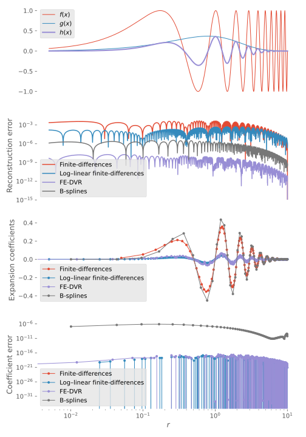

Densities
The mutual density between two functions $f(x)$ and $g(x)$ is defined as
where the term density is used in analogy with density matrices in quantum mechanics, and for which reason the first function is conjugated. Without the conjugate, it is equivalent to the pointwise product.
The mutual density $h(x)$ of two functions expanded over two sets of basis functions
can be expressed as one expansion over one set of basis functions,
and this can be computed using Density, as long as $\ket{A_i}$ and $\ket{B_i}$ are compatible. The space spanned by $\ket{C_i}$ must be able to express products of the original spaces, i.e. if $f(x)$ and $g(x)$ are both quadratic functions, formally $h(x)$ will be a quartic function. There exist rather complicated algorithms for producing the expansion coefficients for the product function expanded over B-splines of higher order than the constituent factors (see e.g. [moerken1991]), however this is rarely needed in practice since we either
- use enough intervals to successfully approximate the function as piecewise polynomials of lower order,
- use high enough polynomial order of our basis functions that we can represent the factors and their product satisfactorily,
- or both of the above.
Therefore, we instead turn to the pragmatic approach which is based on the Vandermonde matrix: if we want to find the expansion coefficients of $h(x)$ on the basis $\ket{C_i}$, we compute the Vandermonde matrix $\mat{V}_C$ (using vandermonde) for that basis and solve
where the right-hand side $h(\vec{x})$ denotes the function values of $h(x)$ on all the interpolation points (returned by locs), but these are in turn given by $(f\cdot g)(\vec{x})$, which we can reconstruct from the expansion coefficients of $f(x)$ and $g(x)$ by multiplying those by their respective Vandermonde matrices $\mat{V}_A$ and $\mat{V}_B$. In total, the expansion coefficients for the product function are thus given by
where $\mat{V}_C^+$ is the Moore–Penrose inverse of $\mat{V}_C$ which can easily be computed using its singular-value decomposition, and $\odot$ denotes the elementwise or Hadamard product, i.e. Julia's .* product. For this to work, naturally the bases $\ket{A_i}$, $\ket{B_i}$, and $\ket{C_i}$ must share interpolation points $\vec{x}$ and thus their Vandermonde matrices must have the same number of rows. For simplicity, CompactBases.jl assumes that $\ket{B_i}$ and $\ket{C_i}$ are the same and that $\ket{A_i}$ is "compatible" (checked by assert_compatible_bases).
For orthogonal bases such as finite-difference and FE-DVR, where the Vandermonde matrix is diagonal and same for both bases, the above formula simplifies to
and in the case of finite-differences on a uniform grid, where the expansion coefficients coincide with the function values at the interpolation points, the Vandermonde matrix reduces to the identity matrix and the product formula is simpler still:
Example
julia> import CompactBases: applied
julia> f = x -> sin(2π*x);
julia> g = x -> x*exp(-x);
julia> h = x -> f(x)*g(x);
julia> rmax,k,N = 10.0,7,71
(10.0, 7, 71)
julia> R = BSpline(LinearKnotSet(k, 0, rmax, N))
BSpline{Float64} basis with LinearKnotSet(Float64) of order k = 7 on 0.0..10.0 (71 intervals)
julia> r = axes(R,1)
Inclusion(0.0..10.0)
julia> cf = R \ f.(r);
julia> cg = R \ g.(r);
julia> ch = R \ h.(r); # Direct expansion of density for comparison
julia> ρ = Density(applied(*,R,cf), applied(*,R,cg))
77 .* 77 -> 77 FunctionProduct Float64, conjugated (<=> Density); L .* R -> R, with
L: BSpline{Float64} basis with LinearKnotSet(Float64) of order k = 7 on 0.0..10.0 (71 intervals)
R: BSpline{Float64} basis with LinearKnotSet(Float64) of order k = 7 on 0.0..10.0 (71 intervals)
julia> ρ.ρ # Expansion coefficients computed via Vandermonde interpolation
77-element Array{Float64,1}:
2.5990302560741227e-6
-1.2089008321819097e-5
0.016650515757241868
0.08609474140758361
0.22264566607626868
0.28428278922020694
0.04487154524021238
-0.3097583765428373
-0.45136208173491543
-0.23816476137564302
0.16360184909444878
0.43464800730290326
0.3730492731330008
0.046047307534972166
-0.2846933885764034
-0.3797631540817138
⋮
0.002725515878867043
0.0015277308449457526
-0.00041784201453291337
-0.0016586000070113436
-0.0015285004379182573
-0.00041624819494116155
0.0007250143682327532
0.0011338505005407673
0.0007023771068706905
-9.73144173106993e-5
-0.0006544921666713287
-0.0006548469749281168
-0.0004243163194033977
-0.00020768615644842965
-6.69583797265351e-5
-5.669216664398177e-10
julia> norm(ρ.ρ - ch)
1.5656487551918337e-6
We can also compute the mutual densities between multiple functions, as long as their matrices of expansions coefficients are broadcastable:
julia> ρ = Density(applied(*,R,cf), applied(*,R,[cg 2cg]))
77 .* (77, 2) -> (77, 2) FunctionProduct Float64, conjugated (<=> Density); L .* R -> R, with
L: BSpline{Float64} basis with LinearKnotSet(Float64) of order k = 7 on 0.0..10.0 (71 intervals)
R: BSpline{Float64} basis with LinearKnotSet(Float64) of order k = 7 on 0.0..10.0 (71 intervals)
julia> ρ.ρ
77×2 Array{Float64,2}:
2.59903e-6 5.19806e-6
-1.2089e-5 -2.4178e-5
0.0166505 0.033301
0.0860947 0.172189
0.222646 0.445291
0.284283 0.568566
0.0448715 0.0897431
-0.309758 -0.619517
-0.451362 -0.902724
-0.238165 -0.47633
0.163602 0.327204
0.434648 0.869296
0.373049 0.746099
0.0460473 0.0920946
-0.284693 -0.569387
-0.379763 -0.759526
⋮
0.00272552 0.00545103
0.00152773 0.00305546
-0.000417842 -0.000835684
-0.0016586 -0.0033172
-0.0015285 -0.003057
-0.000416248 -0.000832496
0.000725014 0.00145003
0.00113385 0.0022677
0.000702377 0.00140475
-9.73144e-5 -0.000194629
-0.000654492 -0.00130898
-0.000654847 -0.00130969
-0.000424316 -0.000848633
-0.000207686 -0.000415372
-6.69584e-5 -0.000133917
-5.66922e-10 -1.13384e-9
julia> ρ = Density(applied(*,R,[cf 2cf]), applied(*,R,[cg 2cg]))
(77, 2) .* (77, 2) -> (77, 2) FunctionProduct Float64, conjugated (<=> Density); L .* R -> R, with
L: BSpline{Float64} basis with LinearKnotSet(Float64) of order k = 7 on 0.0..10.0 (71 intervals)
R: BSpline{Float64} basis with LinearKnotSet(Float64) of order k = 7 on 0.0..10.0 (71 intervals)
julia> ρ.ρ
77×2 Array{Float64,2}:
2.59903e-6 1.03961e-5
-1.2089e-5 -4.8356e-5
0.0166505 0.0666021
0.0860947 0.344379
0.222646 0.890583
0.284283 1.13713
0.0448715 0.179486
-0.309758 -1.23903
-0.451362 -1.80545
-0.238165 -0.952659
0.163602 0.654407
0.434648 1.73859
0.373049 1.4922
0.0460473 0.184189
-0.284693 -1.13877
-0.379763 -1.51905
⋮
0.00272552 0.0109021
0.00152773 0.00611092
-0.000417842 -0.00167137
-0.0016586 -0.0066344
-0.0015285 -0.006114
-0.000416248 -0.00166499
0.000725014 0.00290006
0.00113385 0.0045354
0.000702377 0.00280951
-9.73144e-5 -0.000389258
-0.000654492 -0.00261797
-0.000654847 -0.00261939
-0.000424316 -0.00169727
-0.000207686 -0.000830745
-6.69584e-5 -0.000267834
-5.66922e-10 -2.26769e-9Reference
CompactBases.FunctionProduct — TypeFunctionProduct{Conjugated}Helper object to compute the expansion coefficients of $ρ(x) \defd f^\circ(x)g(x)$, where $f^\circ$ denotes that $f$ may be conjugated, if so desired.
CompactBases.Density — TypeDensityType-alias for FunctionProduct where the first function is conjugated, as is necessary in complex linear algebra, when computing mutual densities.
CompactBases.FunctionProduct — MethodFunctionProduct{Conjugated}(L, R[, T; w=one]) where {Conjugated,T}Construct a FunctionProduct for computing the product of two functions expanded over L and R, respectively:
where $w(x)$ is an optional weight function, over the basis of $g(x)$, via Vandermonde interpolation.
CompactBases.FunctionProduct — MethodFunctionProduct{Conjugated}(f, g) where ConjugatedConstruct a FunctionProduct for computing the product of the two functions f and g.
Base.copyto! — Methodcopyto!(ρ::FunctionProduct{Conjugated}, f::AbstractVector, g::AbstractVector) where ConjugatedUpdate the FunctionProduct ρ from the vectors of expansion coefficients, f and g.
Base.copyto! — MethodBase.copyto!(ρ::FunctionProduct, f, g)Update the FunctionProduct ρ from the functions f and g.
Bibliography
- moerken1991K. Mørken (1991). Some Identities for Products and Degree Raising of Splines. Constructive Approximation, 7(1), 195–208. http://dx.doi.org/10.1007/bf01888153